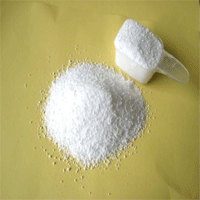
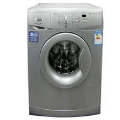

|  | 洗衣服节约窍门洗衣机洗少量衣服时，水位定得太高，衣服在高水里飘来飘去，互相之间缺少摩擦，反而洗不干净，还浪费水。目前，在洗衣机的程序控制上，洗衣机厂商开发出了更多水位段洗衣机，将水位段细化，洗涤启动水位也降低了1／2；洗涤功能可设定一清、二清或三清功能，我们完全可根据不同的需要选择不同的洗涤水位和清洗次数，从而达到节水的目的。 提前浸泡减水耗 洗涤时间可通过织物的种类和衣物脏污的程度来决定。在清洗前对衣物先进行浸泡，可以减少漂洗次数，减少漂洗耗水。 适量配放洗衣粉 洗衣粉的投放量(即洗衣机在恰当水位时水中含洗衣粉的浓度)应掌握好，这是漂洗过程的关键，也是节水、节电的关键。以额定洗衣量2公斤的洗衣机为例，低水位、低泡型洗衣粉，洗衣量少时约要40克，高水位时约需50克。按用量计算，最佳的洗涤浓度为0.1%～0.3%，这样浓度的溶液表面活性最大，去污效果较佳。市场上洗衣粉品种较多，功能各异，可以根据家庭的习惯进行选择。过多配放洗衣粉，势必增加漂洗难度和次数。 衣服集中一起洗 衣服太少不洗，等多了以后集中起来洗，也是省水的办法。 充分利用漂洗 （1）增加漂洗次数，每次漂洗水量宜少不宜多，以基本淹没衣服为准。（2）每次用的漂洗水量相同。（3）每次漂洗完后，尽可能将衣物拧干，再放清水。（4）如果将漂洗的水留下来做下一批衣服洗涤水用，一次可以省下30-40升清水。 |
|  |
水资源介绍